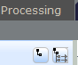
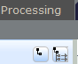

#Run Navigate the tab menu
#This script assume that the Java GUI is already running.
#inputs: tabName=<> tabSubName=[] tabSubNameItem=[]
# tabName = Setup, Mux, Output Groups, Processing, Alarms, Analysis, Thumbnails
# tabSubName = Setup->System, Redundancy, Files, SNMP
# Mux-> no subtabs
# Groups-> no subtabs
# Processing-> no subtabs
# processingView->map, statmux, mbr
# Alarms->Alarms, Settings
# Analysis-> no subtabs
# Thumbnails-> no subtabs
# tabSubNameItem = Setup->System->Device, Network, Software Update
# Setup->Rundundancy->no subtabs
# Setup->Files->no subtabs
# Setup->SNMP->no subtabs
#
# Alarms->Alarms->no subtabs
# Alarms->Settings->no subtabs
#
#Usage: nav_menu.sikuli tabName=<> tabSubName=[] tabSubNameItem=[]
#Usage: nav_menu.sikuli tabName=Setup tabSubName=System tabSubNameItem=Device
###############################################################
#common code for every sikuli code. Do not remove this section
from me7klib import *
###############################################################
#YOUR code start here
###############################################################
#This is your check for the inputs that you are expecting.
def Check_args():
#checking for required arguments
Check_arg('tabName')
Check_args()
############################################################
#Main program definitions code start from this point
#Any global variables here
#Any definitions are here
def Nav_Tabs():
Main_gui(2)
my_tab = Get_arg('tabName')
my_subtab = Get_arg('tabSubName')
my_subtabitem = Get_arg('tabSubNameItem')
wait( )
if find():
#found main menu
#This is for Setup tab
if my_tab.lower() == 'setup':
Print_debug('Selecting Setup tab')
click(Pattern().targetOffset(-37,37)); wait(
)
if find():
#found main menu
#This is for Setup tab
if my_tab.lower() == 'setup':
Print_debug('Selecting Setup tab')
click(Pattern().targetOffset(-37,37)); wait( )
#Now walks thru the Sub tabs
if my_subtab:
if my_subtab == 'System':
click(Pattern().targetOffset(22,26)); wait()
if my_subtabitem:
if my_subtabitem == 'Device':
click(Pattern().targetOffset(-2,186)); wait()
elif my_subtabitem == 'Network':
click(Pattern().targetOffset(-2,186)); click(Pattern().similar(0.80)); wait()
elif my_subtabitem == 'Software Update':
click(Pattern().targetOffset(-2,186)); click(Pattern().similar(0.80)); wait()
else: Exit_program('Invalid sub tab item: ' + str(my_subtabitem), 2)
elif my_subtab == 'Redundancy':
click(Pattern().targetOffset(22,26)); click(); wait()
elif my_subtab == 'Files':
click(Pattern().targetOffset(22,26)); click(Pattern().similar(0.80)); wait()
elif my_subtab == 'SNMP':
click(Pattern().targetOffset(22,26)); click(Pattern().similar(0.80)); wait()
else:
Exit_program('Invalid Setup sub tab: ' + str(my_subtab), 2)
#This is for Mux tab
elif my_tab.lower() == 'mux':
Print_debug('Selecting Mux tab')
click(Pattern().targetOffset(-37,37)); click(Pattern().similar(0.80)); wait(); find(Pattern(
)
#Now walks thru the Sub tabs
if my_subtab:
if my_subtab == 'System':
click(Pattern().targetOffset(22,26)); wait()
if my_subtabitem:
if my_subtabitem == 'Device':
click(Pattern().targetOffset(-2,186)); wait()
elif my_subtabitem == 'Network':
click(Pattern().targetOffset(-2,186)); click(Pattern().similar(0.80)); wait()
elif my_subtabitem == 'Software Update':
click(Pattern().targetOffset(-2,186)); click(Pattern().similar(0.80)); wait()
else: Exit_program('Invalid sub tab item: ' + str(my_subtabitem), 2)
elif my_subtab == 'Redundancy':
click(Pattern().targetOffset(22,26)); click(); wait()
elif my_subtab == 'Files':
click(Pattern().targetOffset(22,26)); click(Pattern().similar(0.80)); wait()
elif my_subtab == 'SNMP':
click(Pattern().targetOffset(22,26)); click(Pattern().similar(0.80)); wait()
else:
Exit_program('Invalid Setup sub tab: ' + str(my_subtab), 2)
#This is for Mux tab
elif my_tab.lower() == 'mux':
Print_debug('Selecting Mux tab')
click(Pattern().targetOffset(-37,37)); click(Pattern().similar(0.80)); wait(); find(Pattern( ).similar(0.80)); click(Pattern().similar(0.80).targetOffset(8,0)); click(Pattern().similar(0.80).targetOffset(-14,1))
#check if the vertical bar is in correct position
if not exists(Pattern().exact()): find(Pattern().similar(0.80).targetOffset(-14,1)); dragDrop(Pattern().similar(0.80).targetOffset(24,5), Pattern().targetOffset(307,50))
#This is for Output Groups tab
elif my_tab.lower() == 'groups':
Print_debug('Selecting Groups tab')
click(Pattern().targetOffset(-37,37)); click(); wait(); find(Pattern().similar(0.80)); click(Pattern().similar(0.80).targetOffset(8,0)); click(Pattern().similar(0.80).targetOffset(-14,1))
if not exists(Pattern().similar(0.90)): find(Pattern().targetOffset(-14,1)); dragDrop(Pattern().targetOffset(24,5), Pattern().targetOffset(307,50))
if my_subtab:
if my_subtab.upper() == 'OUTPUT': click(Pattern().targetOffset(-46,62)); wait()
elif my_subtab.upper() == 'MBR': click(Pattern().targetOffset(-46,62)); click(); wait()
else: Exit_program('Invalid Groups sub tab: ' + my_subtab, 2)
#This is for Processing tab
elif my_tab.lower() == 'processing':
Print_debug('Selecting Processing tab')
click(Pattern().targetOffset(-37,37)); click(); wait(); find(Pattern().similar(0.80)); click(Pattern().similar(0.80).targetOffset(8,0)); click(Pattern().similar(0.80).targetOffset(-14,1))
#check if the vertical bar is in correct position
if not exists(Pattern().similar(0.90)): find(Pattern().targetOffset(-14,1)); dragDrop(Pattern().targetOffset(24,5), Pattern().targetOffset(307,50))
myview = Get_arg('processingView')
if myview:
find(Pattern().similar(0.80))
if myview.lower() == 'map': click(Pattern().similar(0.80).targetOffset(123,3)); click(Pattern().similar(0.80).targetOffset(70,20))
elif myview.lower() == 'statmux': click(Pattern().similar(0.80).targetOffset(123,3)); click(Pattern().similar(0.80).targetOffset(70,32))
elif myview.lower() == 'mbr': click(Pattern().similar(0.80).targetOffset(123,3)); click(Pattern().similar(0.80).targetOffset(70,50))
else: Exit_program('Invalid processingView: ' + myview, 2)
elif my_tab == 'Alarms':
Print_debug('Selecting Alarms tab')
click(Pattern().targetOffset(-37,37)); click(); wait(Pattern().similar(0.80))
#Now walks thru the sub tabs
if my_subtab:
if my_subtab == 'Alarms':
click(Pattern().similar(0.80).targetOffset(-402,33)); wait()
if not exists(Pattern().exact()): find(); dragDrop(Pattern().targetOffset(-73,2), Pattern().targetOffset(271,80))
elif my_subtab == 'Settings':
click(Pattern().similar(0.80).targetOffset(-402,33)); click(Pattern().targetOffset(34,0)); wait(Pattern().similar(0.80))
else:
Exit_program('Invalid Alarm sub tab: ' + my_subtab, 2)
elif my_tab == 'Analysis':
Print_debug('Selecting Analysis tab')
click(Pattern().targetOffset(-37,37)); click(); wait()
elif my_tab == 'Thumbnails':
Print_debug('Selecting Thumbnails tab')
click(Pattern().targetOffset(-37,37)); click(
).similar(0.80)); click(Pattern().similar(0.80).targetOffset(8,0)); click(Pattern().similar(0.80).targetOffset(-14,1))
#check if the vertical bar is in correct position
if not exists(Pattern().exact()): find(Pattern().similar(0.80).targetOffset(-14,1)); dragDrop(Pattern().similar(0.80).targetOffset(24,5), Pattern().targetOffset(307,50))
#This is for Output Groups tab
elif my_tab.lower() == 'groups':
Print_debug('Selecting Groups tab')
click(Pattern().targetOffset(-37,37)); click(); wait(); find(Pattern().similar(0.80)); click(Pattern().similar(0.80).targetOffset(8,0)); click(Pattern().similar(0.80).targetOffset(-14,1))
if not exists(Pattern().similar(0.90)): find(Pattern().targetOffset(-14,1)); dragDrop(Pattern().targetOffset(24,5), Pattern().targetOffset(307,50))
if my_subtab:
if my_subtab.upper() == 'OUTPUT': click(Pattern().targetOffset(-46,62)); wait()
elif my_subtab.upper() == 'MBR': click(Pattern().targetOffset(-46,62)); click(); wait()
else: Exit_program('Invalid Groups sub tab: ' + my_subtab, 2)
#This is for Processing tab
elif my_tab.lower() == 'processing':
Print_debug('Selecting Processing tab')
click(Pattern().targetOffset(-37,37)); click(); wait(); find(Pattern().similar(0.80)); click(Pattern().similar(0.80).targetOffset(8,0)); click(Pattern().similar(0.80).targetOffset(-14,1))
#check if the vertical bar is in correct position
if not exists(Pattern().similar(0.90)): find(Pattern().targetOffset(-14,1)); dragDrop(Pattern().targetOffset(24,5), Pattern().targetOffset(307,50))
myview = Get_arg('processingView')
if myview:
find(Pattern().similar(0.80))
if myview.lower() == 'map': click(Pattern().similar(0.80).targetOffset(123,3)); click(Pattern().similar(0.80).targetOffset(70,20))
elif myview.lower() == 'statmux': click(Pattern().similar(0.80).targetOffset(123,3)); click(Pattern().similar(0.80).targetOffset(70,32))
elif myview.lower() == 'mbr': click(Pattern().similar(0.80).targetOffset(123,3)); click(Pattern().similar(0.80).targetOffset(70,50))
else: Exit_program('Invalid processingView: ' + myview, 2)
elif my_tab == 'Alarms':
Print_debug('Selecting Alarms tab')
click(Pattern().targetOffset(-37,37)); click(); wait(Pattern().similar(0.80))
#Now walks thru the sub tabs
if my_subtab:
if my_subtab == 'Alarms':
click(Pattern().similar(0.80).targetOffset(-402,33)); wait()
if not exists(Pattern().exact()): find(); dragDrop(Pattern().targetOffset(-73,2), Pattern().targetOffset(271,80))
elif my_subtab == 'Settings':
click(Pattern().similar(0.80).targetOffset(-402,33)); click(Pattern().targetOffset(34,0)); wait(Pattern().similar(0.80))
else:
Exit_program('Invalid Alarm sub tab: ' + my_subtab, 2)
elif my_tab == 'Analysis':
Print_debug('Selecting Analysis tab')
click(Pattern().targetOffset(-37,37)); click(); wait()
elif my_tab == 'Thumbnails':
Print_debug('Selecting Thumbnails tab')
click(Pattern().targetOffset(-37,37)); click( ); wait()
else:
Print_text('Invalid tab name: ' + my_tab)
exit(1)
#wrong menu name
else:
Exit_program('Failed to look for main gui page.', 1, 1)
#######################################################
#Main program flow
Nav_Tabs()
); wait()
else:
Print_text('Invalid tab name: ' + my_tab)
exit(1)
#wrong menu name
else:
Exit_program('Failed to look for main gui page.', 1, 1)
#######################################################
#Main program flow
Nav_Tabs()